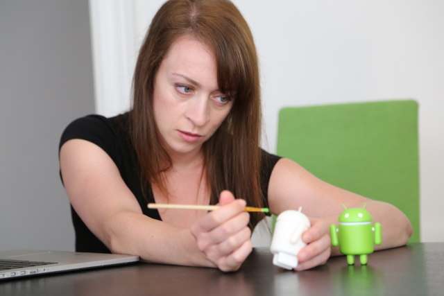

História do Mascote do Android
O Android, sistema operacional do Google, é um dos mais usados no mundo. Mas você conhece a história do seu mascote?
A Primeira Versão
Em 2007, o desenvolvedor Dan Morrill criou, por conta própria, uma versão inicial do mascote no Inkscape, apenas para sua equipe. Esse primeiro design foi chamado de "Dandroids".
Surge um novo mascote
A ilustradora russa Irina Blok, funcionária do Google, foi encarregada de criar um mascote mais atraente. Ela desenvolveu o Bugdroid, com traços simples e inspirado nos bonequinhos de portas de banheiro.
Versões "adocicadas" do Android
Cada versão do Android foi nomeada em homenagem a doces, em ordem alfabética: